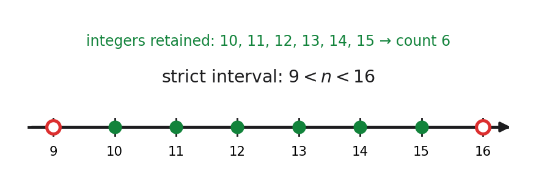

Problem (ESAT style, not WME01). How many different integers \(n\) are there such that the difference between \(2\sqrt{n}\) and \(7\) is less than \(1\)? (Options: 0, 2, 4, 6, 8.)
No marks allocated — lesson warm-up
Lesson status: ESAT-STYLE WARM-UP — NOT WME01 · Source class: lesson warm-up (not part of WME01)
Teaching visual — strict endpoints and integer count.

Definition and strategy. The “difference” between two real numbers is the non-negative size of their gap, so the condition is \(\lvert 2\sqrt{n}-7\rvert<1\). Start with this single modulus statement rather than guessing integers: \(\lvert X\rvert<1\) is equivalent to \(-1<X<1\). This route matters because it keeps both sides of the gap and preserves the strict endpoints.
Substitute \(X=2\sqrt n-7\): \(-1<2\sqrt n-7<1\). Add seven to every member to obtain \(6<2\sqrt n<8\), then divide every member by positive two: \(3<\sqrt n<4\). Division by a positive number leaves both inequality signs unchanged. All three quantities are now non-negative, so squaring is order-preserving and gives \(9<n<16\). This sign/domain check is essential: squaring an inequality without first knowing the relevant sides are non-negative is not generally reversible.
The integers strictly inside the interval are \(10,11,12,13,14,15\). Inclusive counting from the first permitted integer to the last gives \(15-10+1=6\); the “plus one” counts both 10 and 15.
Check-back. At \(n=10\), \(2\sqrt{10}\) is just above 6, so its gap from 7 is below 1; at \(n=15\), \(2\sqrt{15}\) is just below 8, also valid. At the boundary values \(n=9\) and \(n=16\), the gap is exactly 1, not less than 1, so both are excluded.
Definition-first recall. A strict modulus inequality \(\lvert f(n)\rvert<k\), with \(k>0\), means \(-k<f(n)<k\). For this warm-up, retain the exact statement \(\lvert2\sqrt n-7\rvert<1\) and the domain \(n\ge 0\) before manipulating anything. The efficient strategy is to reduce one compound inequality in reversible stages; a list of decimal trials is slower and can hide a missed endpoint.
Reconstruct the chain without looking back: \(-1<2\sqrt n-7<1\), then \(6<2\sqrt n<8\), then \(3<\sqrt n<4\), and finally \(9<n<16\). At each transition state why it is legal. Adding seven changes no signs. Dividing by positive two changes no signs. Squaring preserves order here because \(3\), \(\sqrt n\), and \(4\) are non-negative. Had a negative bound remained, automatic squaring could reverse which magnitude is larger and would not be an equivalent step.
Translate the strict interval into candidates only after the algebra: \(n=10\) through \(15\). The count is \(15-10+1=6\). Reject \(16-9=7\): that computes interval length, not the number of integers strictly between the endpoints. Reject including 9 or 16 because each makes the original absolute difference exactly one.